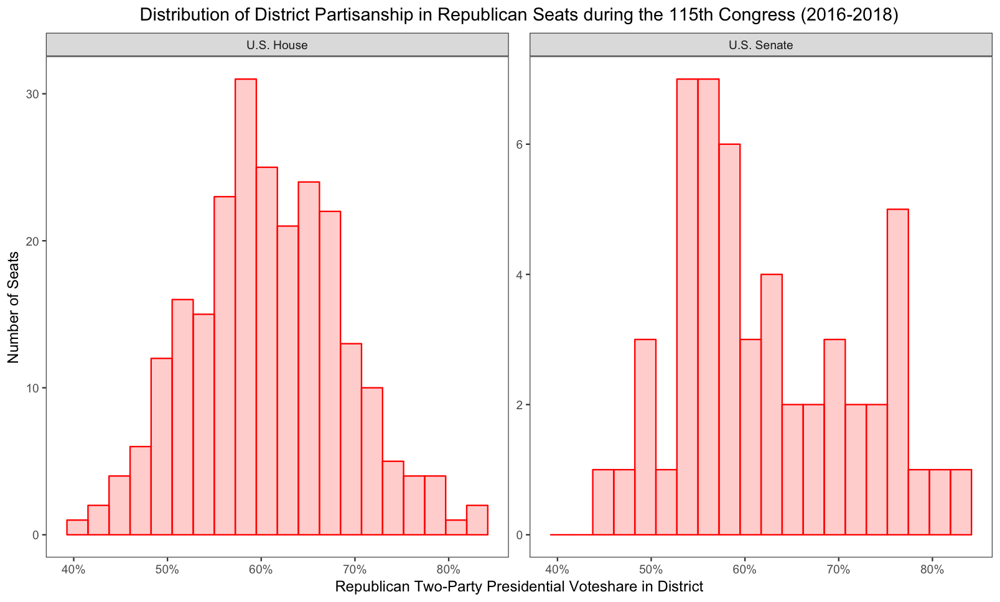
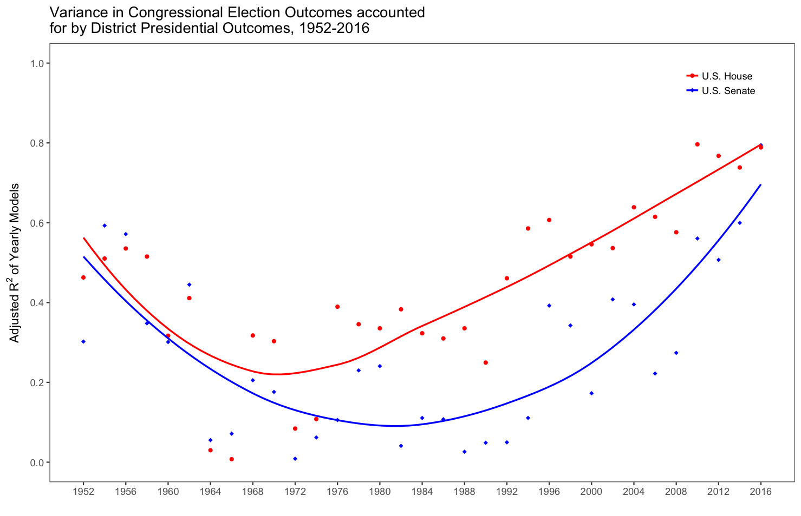

Welcome!

United States Capitol, 113th Congress.



I’m a fourth year PhD candidate in the Department of Political Science at the University of California, Davis. My research agenda focuses broadly on voter decision rules in congressional elections, representation, and legislative behavior. My dissertation project focuses on how voter perceptions of congressional job performance shape electoral outcomes and partisan legislative incentives. I also have an interest in the measurement of voter and elite ideological preferences in the common space and over time.
In addition to my dissertation, I am also involved in projects analyzing how polarization changes the nature of congressional election dynamics, how political attitudes distort proximity voting, and electoral consequences of legislative obstruction.
Copyright © 2017 by Carlos Algara. Made with RStudio.